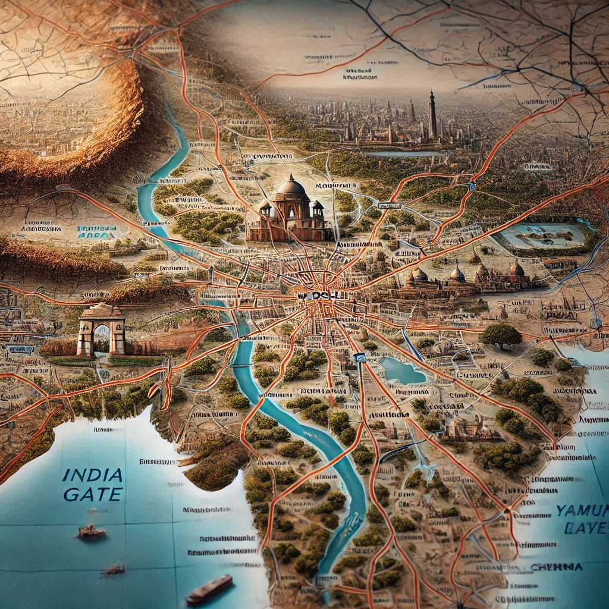
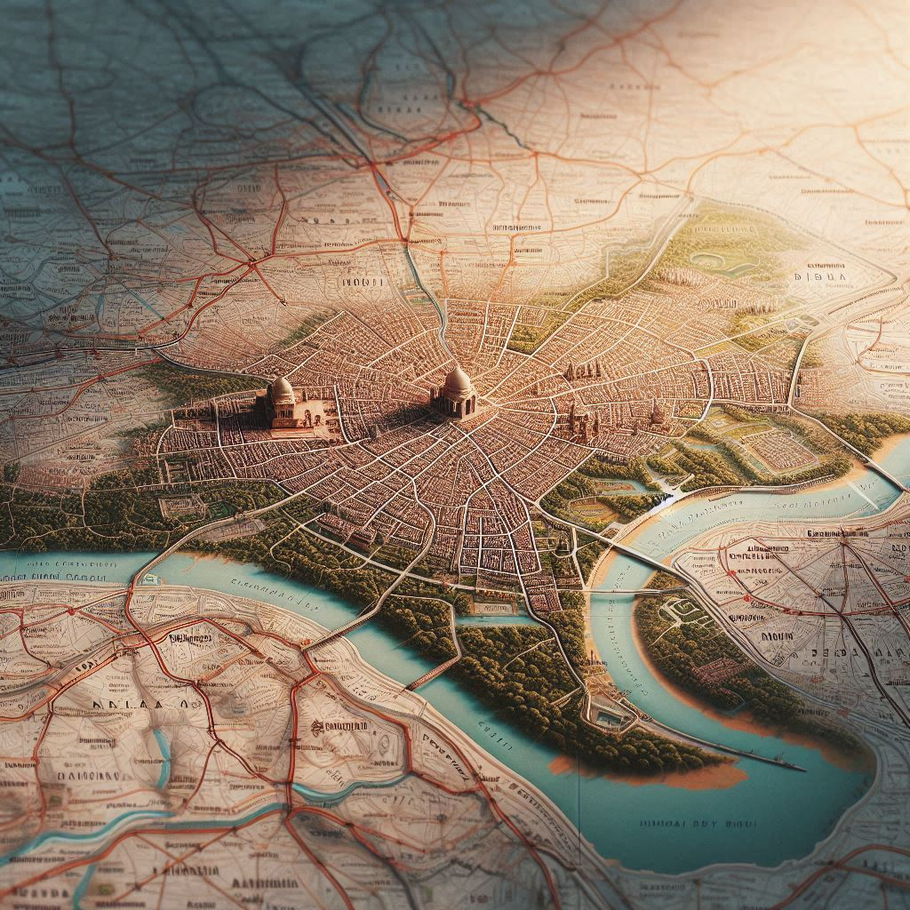

Delhi, the capital territory of India, is strategically located in the northern part of the country. Here are some key points about its geographic location:
1. Coordinates
Delhi is situated at approximately28.6139° N latitude and 77.2090° E longitude.
2. Topography
Elevation: The city is located at an elevation of about 216 meters (709 feet) above sea level.
Landforms: Delhi features a mix of urban landscapes, including plains and some hills. The Yamuna River runs through the eastern part of the city, contributing to its geography.
3. Climate
Climate Zone: Delhi experiences a semi-arid climate, characterized by extreme temperatures: hot summers (up to 45°C or 113°F) and cold winters (down to around 5°C or 41°F).
Seasons: The city has three main seasons: summer (April to June), monsoon (July to September), and winter (October to March).


4. Surrounding Regions
Neighboring States: Delhi is bordered by the states of Haryana on the west, north, and south, and Uttar Pradesh to the east.
Proximity to Major Cities: It is located close to several major cities, including Gurgaon (Gurugram) and Noida, which are part of the National Capital Region (NCR).
5. National Capital Region (NCR)
NCR Definition: Delhi is a part of the National Capital Region, which includes surrounding districts from neighboring states, facilitating economic and infrastructural integration.
6. Transportation Links
Air: Indira Gandhi International Airport connects Delhi to domestic and international destinations.
Rail: The city is a major railway hub with extensive connections across India.
Road: A well-developed network of highways and expressways links Delhi to other states and cities.
Conclusion
Delhi's geographic location as the capital of India positions it as a key political, cultural, and economic center. Its strategic location, combined with a rich historical backdrop, makes it a significant hub in Northern India. The interplay of its diverse geography and urban development contributes to the city’s unique character.